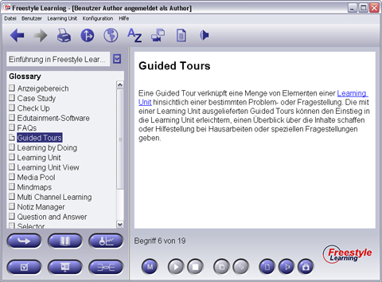

Das Glossay-Perspektive dient als Referenz für die in den Learning Unit Views verwendeten Ausdrücke. Die Handhabung ähnelt der Text Study. Im Gegensatz zur Text Study existieren im Glossar keine Ordner, sondern eine Ansammlung an Fachvokabular und Definitionen.

Die Interaktionsleiste beinhaltet als Standrad-Interaktionsschaltflächen zum Navigieren durch den Strukturbaum und die Split Screen-Schaltflächen zum gleichzeitigen Betrachten zweier Elemente.
View-spezifische Interaktions-Schaltflächen
| Memory | Wechselt zwischen Memory- und Glossar-Modus | |
| Start | Startet eine neue Memory-Sitzung | |
| Stop | Beendet eine laufende Memory-Sitzung |
Zurück zur Hauptseite